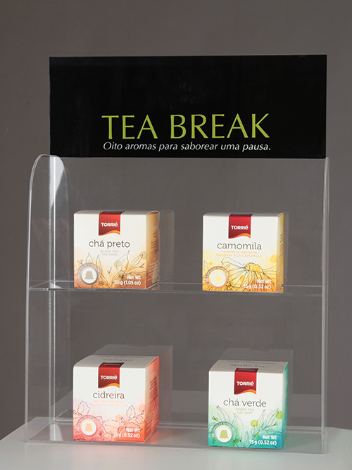
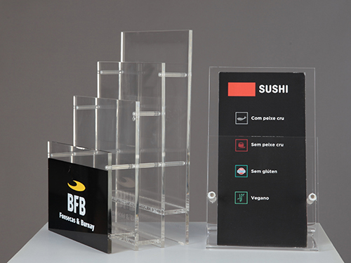

LUZPLANA / TRANSFORMAÇÃO DE ACRÍLICO
A sua ideia.
Uma forma.
Uma função.
Expor um produto. Apresentar informação. Dar lugar a um objeto. O acrílico toma a forma daquilo que precisa de mostrar.
Encontre uma aplicação
COMECE PELO USO
O que pretende
apresentar?
Explore as peças pela sua aplicação e encontre uma referência para a sua ideia.

INFORMAÇÃO À VISTA
Pequenas peças.
Uma função clara.
O formato do folheto, a posição no balcão e a mensagem a mostrar ajudam a definir a peça. Veja exemplos de suportes e sinalética.
Explorar informação e sinaléticaA LUZPLANA
Do acrílico
à aplicação.
A Luzplana dedica-se à transformação de acrílico, incluindo expositores personalizados, painéis e porta-folhetos.
Nas instalações em São Pedro da Cova, Gondomar, a conversa começa pela utilização que pretende dar à peça.
Conhecer a LuzplanaDA APLICAÇÃO À PEÇA
O que tem
em mente?
Uma referência, um desenho ou o espaço onde a peça vai ficar. É por aí que começa a conversa.
Conversar com a Luzplana